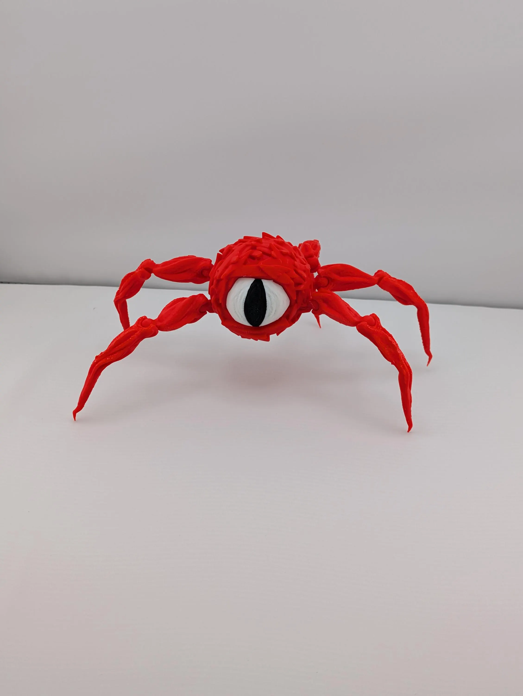

Creepy Red Spider Monster
$12.00
Unleash a spine-chilling addition to your shelf with our Red Spider Monster! 🔥 This creepy crawler is 3D printed with precision and comes in a variety of colors to suit your vibe. Whether you're decorating for Halloween, collecting monsters, or love a touch of weird—this beast is a showstopper.
🕷️ Key Features:
- Massive reach: ~10.5" long with legs extended
- Stands tall: ~4" in height
- Easily assembled: Ships unassembled for safe travel—legs pop in easily
- Detachable legs: For easy storage, posing, and customization
- Stationary design: Perfect for shelf or desk display
💥 Warning: This monster is not a toy for small kids—those legs might give them nightmares!
⚠️ Disclaimer: Our 3D printed items are intended for display or adult collector use only. Some prints may include small parts, sharp points, or detachable components and are not toys. Keep out of reach of children.